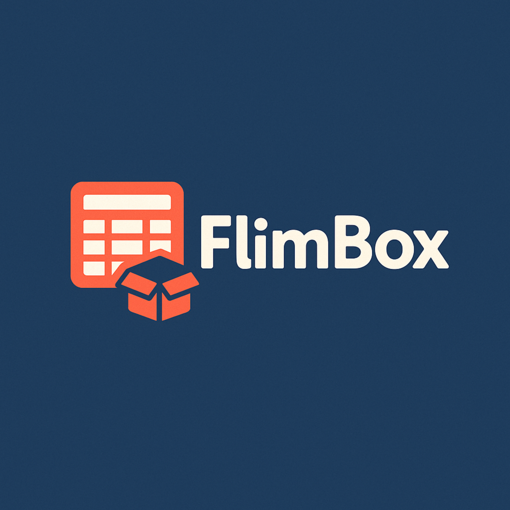

Gestione dati più semplice e personalizzabile
Il progetto punta a fornire un’interfaccia intuitiva per creare, modificare e gestire tabelle con struttura definita dall’utente, riducendo la complessità tecnica per l’operatività quotidiana.
FlimBox è un software desktop in .NET per la gestione flessibile di dati tabellari aziendali, pensato per ridurre attrito operativo, organizzare informazioni critiche e offrire una base solida per l’evoluzione del prodotto nel tempo.

Il progetto punta a fornire un’interfaccia intuitiva per creare, modificare e gestire tabelle con struttura definita dall’utente, riducendo la complessità tecnica per l’operatività quotidiana.
Applicazione desktop in .NET, modello dati flessibile, import/export e continuità di rilascio rendono FlimBox interessante per contesti che cercano controllo operativo, personalizzazione e roadmap evolutiva.
Le funzionalità principali mostrano una piattaforma desktop già orientata a casi d’uso reali, continuità operativa e organizzazione efficace delle informazioni.
Creazione di tabelle indipendenti, gestione righe e modifica diretta dei dati nelle celle.
Ridenominazione di tabelle e colonne, definizione di tipi di dato e organizzazione a schede separate.
Import/export Excel e generazione di PDF personalizzati con layout configurabile.
Preferenze di interfaccia, gestione ordinata del prodotto e base solida per futuri miglioramenti.
Lo storico release aiuta a leggere ritmo di sviluppo, manutenzione del prodotto e capacità di iterare nel tempo su una base già funzionante.
FlimBox risponde a esigenze concrete di organizzazione dati, controllo dei flussi e semplificazione del lavoro quotidiano in ambienti che gestiscono registri, reparti o dataset strutturati.
Il progetto si presta a evoluzioni come reporting avanzato, gestione utenti, moduli verticali, integrazioni dedicate e altre funzionalità ad alto valore aggiunto.
FlimBox può crescere con nuove automazioni, reporting più avanzato, gestione utenti, backup migliorati ed estensioni verticali dedicate a mercati specifici.